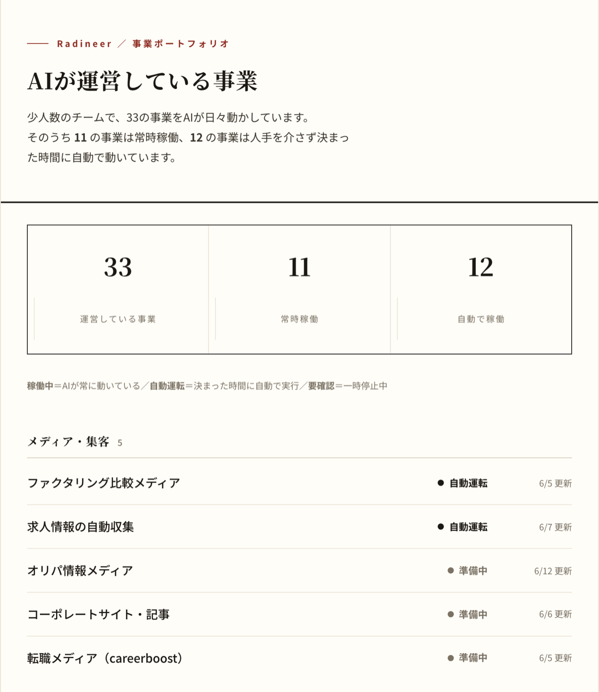
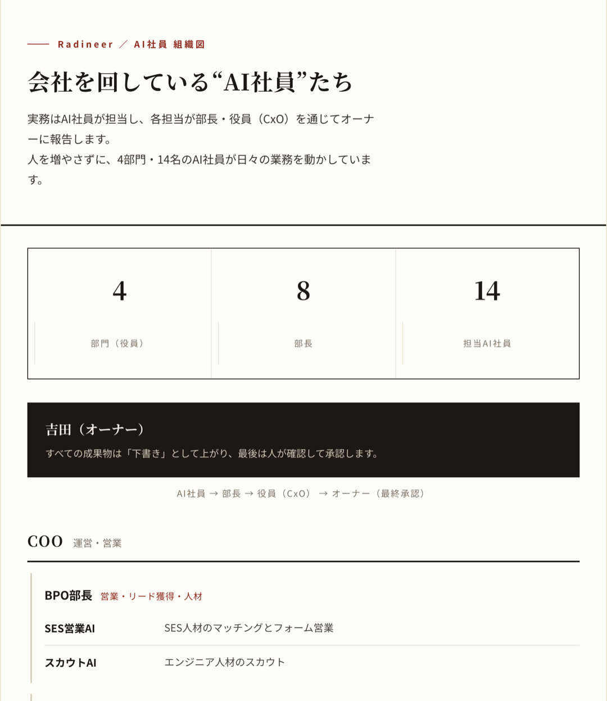
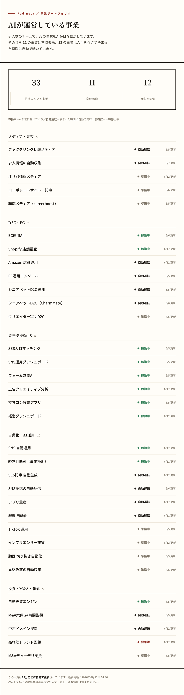
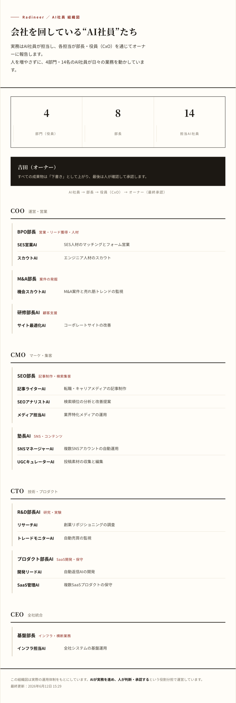

AIツールは試した。でも結局「自分でやった方が早い」で止まっている——そんな経営者・個人事業主の方へ
たった一人で、20以上の事業を“AI社員”に任せて回す。
その「何を・どう任せるか」の設計法を、無料で公開します。
当日は、あなたの業務を1つ、その場でAI社員化して実演します。
お申込みの方には、まず「業務棚卸し診断シート」をお渡しします。何を任せられるか、当日までに整理できます。
無料で参加を申し込む30秒で完了 ・ カメラオフ可 ・ 電話営業なし「稼げる」セミナーではありません。“仕組みの作り方”の話です。

これからの分かれ道
同じツールを持っていても、一日の使い方は正反対になります。自分で全部やる限り、時間は増えません。「何を任せるか」を設計できた人だけが、手を空けられる。
自分で使う
ツールを覚え、自分で操作する。一日の作業量は減らず、自分が止まれば仕事も止まる。
任せる
何を任せるかを設計し、AI社員に渡す。自分は“決めること”に時間を使えるようになる。
01 いま起きていること
世のAI情報は、ほとんどが「ツールの使い方」。だから「自分の会社で、何をどう任せるか」は誰も教えてくれません。
足りないのは“ツールの知識”ではなく、“何を任せるか”の設計です。
02 目指す状態
BEFORE ─ 社長が抱える業務の山
AFTER ─ AI社員に振り分け済み
設計すれば、社長は“決めること”に集中できる
AI社員が日々の実務を回し、社長は“決めること”に集中する。人を増やさず、仕組みで会社が回る状態です。
成果や時間削減を保証するものではありません。設計の考え方をお伝えします。
03 問い
「何を、どうAIに任せるか」を設計できたら——あなたの一日は、何に使えるようになるでしょうか。
04 当日の流れ

6/24(水) 21:00–
参加特典
無料セミナー限定 ─ お持ち帰り 4点
ふつうのAI講座との違い
主催 ／ 実践の証拠
机上の理論ではなく、毎日動いている運営画面そのものをお見せします。下の2枚は、私たちが実際に使っている管理画面です（売上・顧客情報は含みません）。


運営：Radineer株式会社（特定商取引法に基づく表記に運営者情報を記載）。公式：ai-driven-school.com
なぜ、無料で共有するのか
後半で、設計から実装まで90日伴走するプログラムを“ご案内のみ”します。だから無料で開催できます。その場で売り込むことはしません。続きが必要な方だけ、ご自身で判断してください。
有料に進む方にも、お試し（返金）期間を設けています。個人向けローンへの誘導はありません。無理に決めていただく仕組みではありません。
その場で参加者の業務をAI社員化して実演するため、対応できる人数に限りがあります。今回は少人数制での開催です。個別の電話・訪問営業は一切行いません。
返金条件の詳細は特定商取引法に基づく表記をご確認ください。
よくあるご質問
追伸 「自分がやらないと回らない」と感じているなら、それは能力ではなく“仕組みを設計していないだけ”かもしれません。今日の60分で、何を手放せるかが見えます。
追々伸 少人数制での開催です。席が埋まる前に、お早めに。
6/24(水) 21:00–／少人数制
本会は生成AIの業務活用に関する教育コンテンツであり、収益・成果・効果を保証するものではありません。記載の実績・数値は、事実に基づくもののみ掲載します。
特定商取引法に基づく表記（運営者情報・返金条件を含む）。